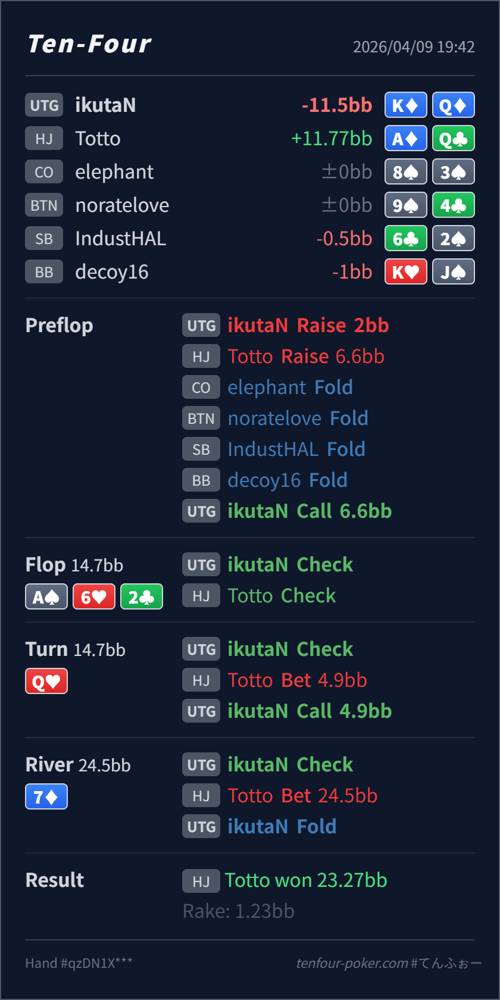

Preflop
良いK♦Q♦ は UTG open に対する HJ 3bet へ OOP から続行できる suited broadway の上位です。
主論点は、HJ の 3bet pot で A♠ 6♥ 2♣ の flop check-back にどんなレンジが残り、Q♥ turn の小さい delayed c-bet と 7♦ river の pot bet に対して K♦Q♦ をどの bluff-catch bucket に置くかです。結論は、preflop call、turn call、river fold は大筋で自然です。いちばん大事なのは、flop の check-check を弱さと決めつけず、river の大きい size では value density を見直すことです。
K♦Q♦A♦Q♣A♠ 6♥ 2♣ / Q♥ / 7♦AK/AQ の一部、KK-JJ-TT、少数の trap が十分残ります。turn Q♥ で K♦Q♦ はそのレンジに対する自然な call bucket へ上がります。7♦ の pot bet まで進むと、HJ range は AQ, AA, QQ, 一部 AK にかなり寄ります。K♦Q♦ は KJ/QJ 系の bluff を block するので、上側の bluff-catcher ではあるものの fold 寄りに寄せやすい combo です。K♦Q♦A♦Q♣2BB, HJ raise 6.6BB, UTG callA♠ 6♥ 2♣ / Q♥ / 7♦4.9BB, UTG call24.5BB, UTG foldA♦Q♣
良いK♦Q♦ は UTG open に対する HJ 3bet へ OOP から続行できる suited broadway の上位です。
A♠ 6♥ 2♣良い
Hero は K-high でここから無理に動く必要はなく、まず相手 range の check-back 構成を受け取る street です。
Q♥良いK♦Q♦ は Qx の上位 continue で、相手レンジに対して素直に call に置きやすいです。
7♦良い foldK♦Q♦ は strong bluff-catcher ではありますが、KJ/QJ を block しており、pot size には fold 寄りです。
| 論点 | その場で起きがちな見え方 | どこがズレたか | 次回の基準 |
|---|---|---|---|
flop check-check の受け取り方 | IP が A-high board を打たなかったので、かなり弱く見える | HJ の 3bet range は強く、AK/AQ や AA を一部 slowplay していても不自然ではありません。KK-JJ のような showdown 重視 hand も多く、まだ十分強い塊です。 | 3bet pot の A-high check-back は 弱い ではなく、capped だが value は残る と整理する |
river の K♦Q♦ | turn で Q に当たったので、pot bet にも bluff-catch したくなる | K♦Q♦ は確かに Qx の上位ですが、river で残る HJ value は AQ/AA/QQ が濃く、自然な bluff は少なめです。さらに KQ は KJ/QJ の一部 bluff を block するので、call の質が少し下がります。 | 上位 bluff-catcher と call すべき bluff-catcher は別で、pot size では bluff 数と blocker を一段厳しく見る |
| ストリート | その時点の見え方 | 判断の軸 | 評価 | コメント |
|---|---|---|---|---|
| Preflop | HJ の 3bet range は QQ+, AK, AQs を主軸に、一部 broadway bluff が混ざる強い塊です。 | K♦Q♦ は UTG open に対する HJ 3bet へ OOP から続行できる suited broadway の上位です。 | 良い | この call は自然です。 |
Flop A♠ 6♥ 2♣ | HJ の check-back には AK/AQ の一部、KK-JJ-TT, slowplay が残ります。 | Hero は K-high でここから無理に動く必要はなく、まず相手 range の check-back 構成を受け取る street です。 | 良い | check で問題ありません。 |
Turn Q♥ | HJ の small delayed c-bet には delayed value と一部 broadway bluff が混ざります。 | K♦Q♦ は Qx の上位 continue で、相手レンジに対して素直に call に置きやすいです。 | 良い | この call はかなり自然です。 |
River 7♦ | HJ の pot bet は AQ, AA, QQ, 一部 AK に寄りやすく、bluff は missed heart 系と一部 broadway に限られます。 | K♦Q♦ は strong bluff-catcher ではありますが、KJ/QJ を block しており、pot size には fold 寄りです。 | 良い fold | ここで hero-call を増やすより、まずはこの fold を baseline にして大丈夫です。 |
空気になった と見ないことが大事です。相手の delayed range に対してどの call bucket に入るか を先に見ると整理しやすいです。自分の hand が上位 bluff-catcherか だけでなく、何の bluff を block しているか まで見ると精度が上がります。KQ のような one-pair bluff-catcher は少し降り寄りで十分戦えます。AQ+/slowplay の残存を強めに見る方が安定します。